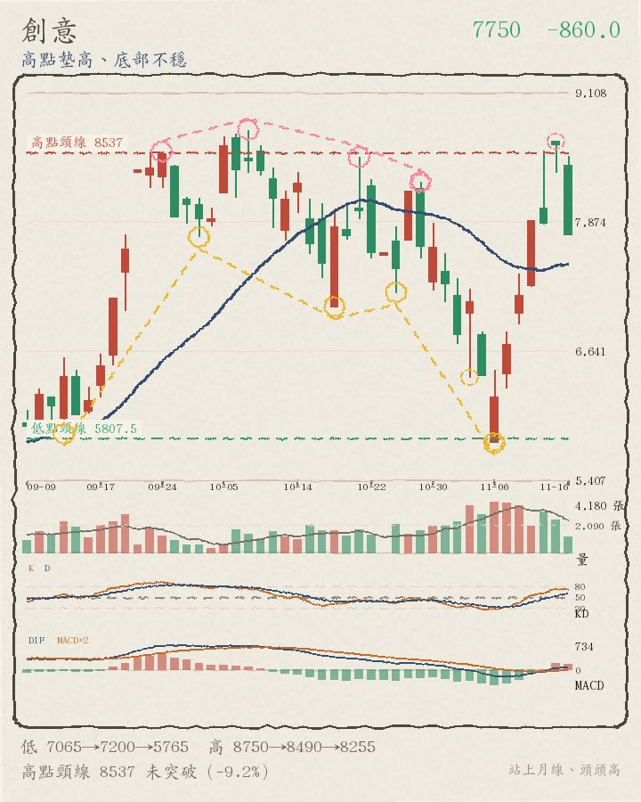
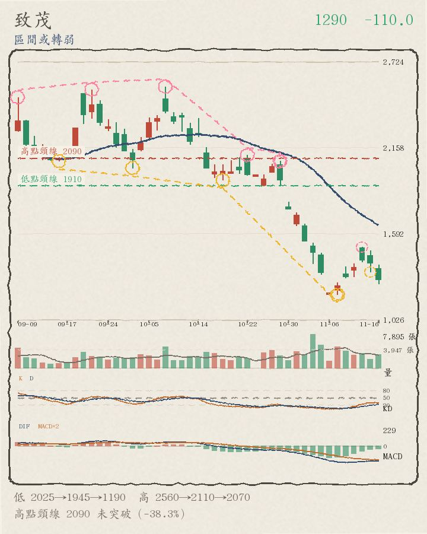
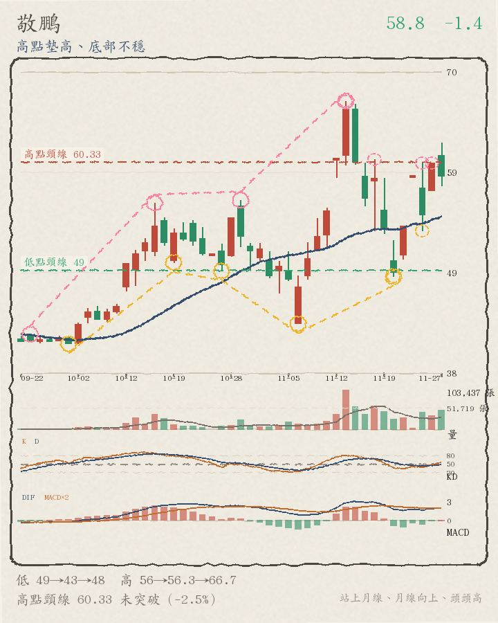
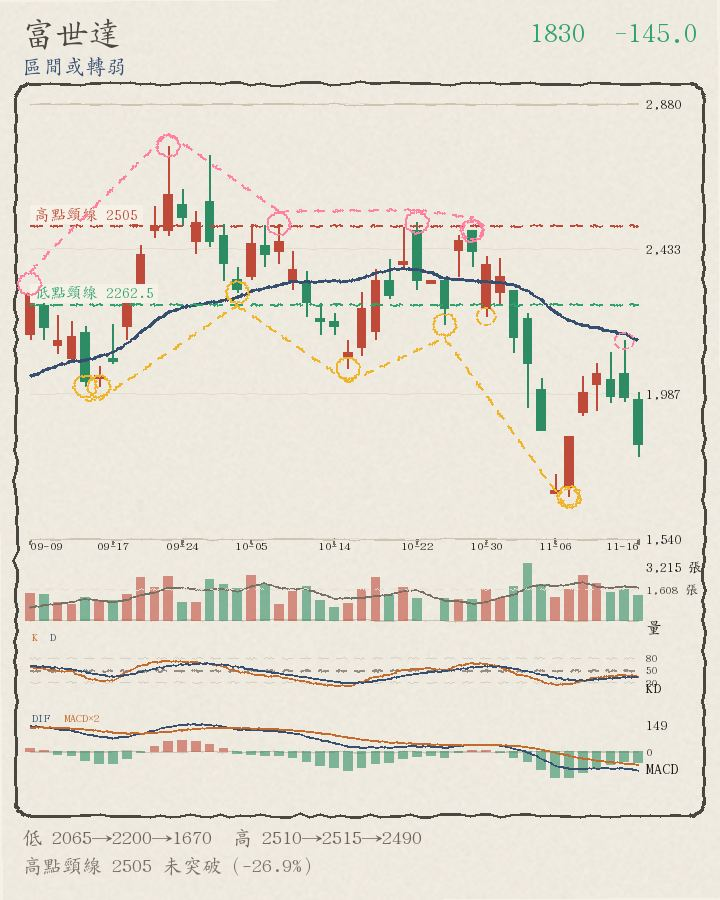
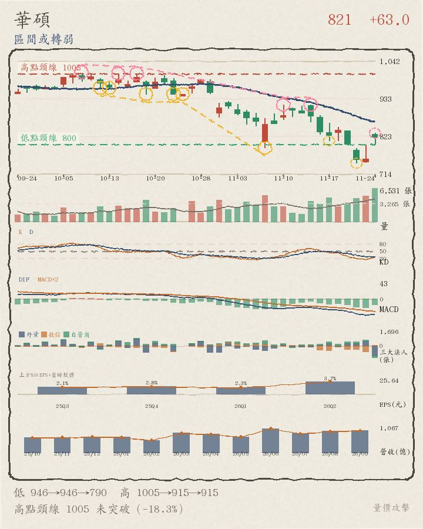
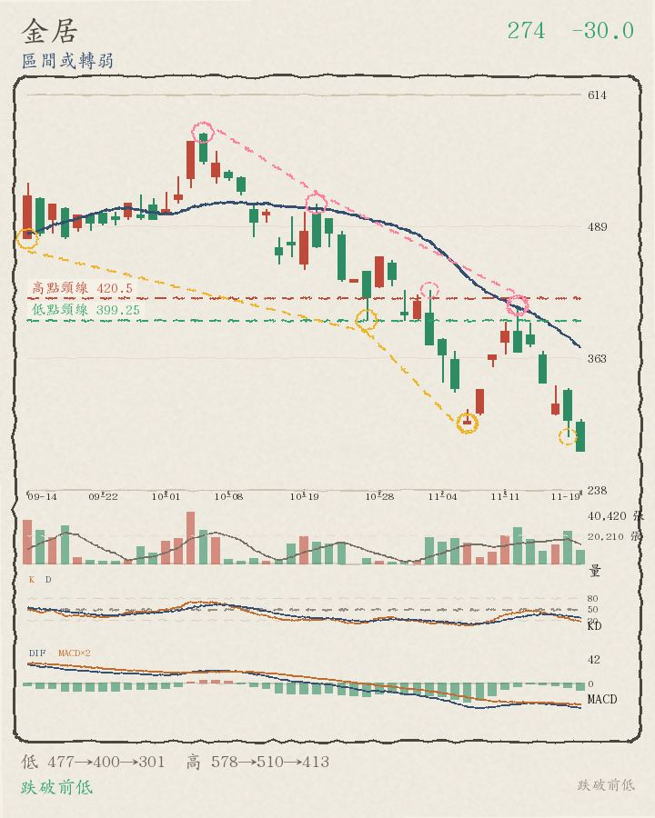
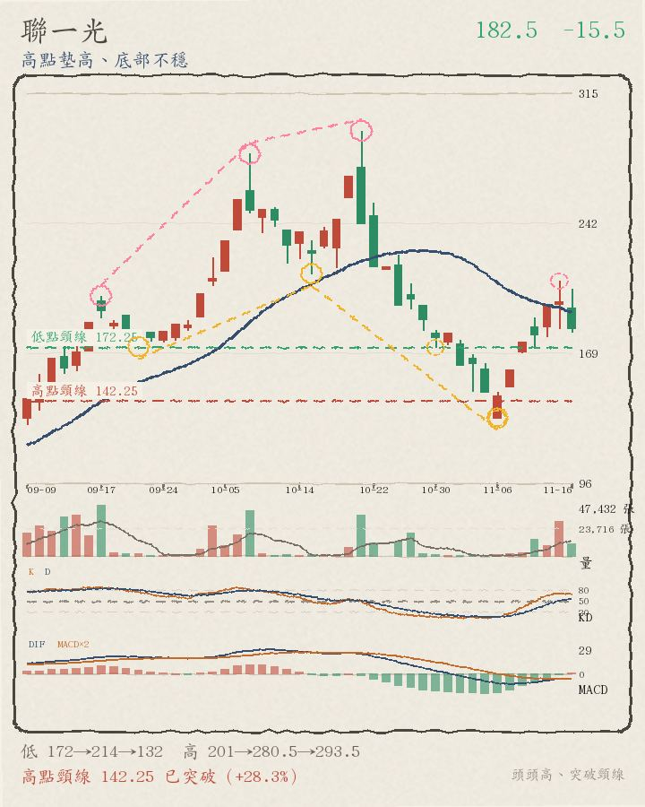
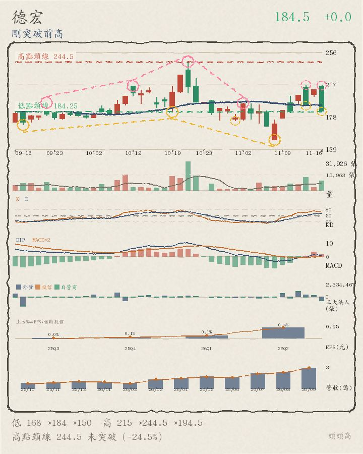

← 回股市觀察
逐檔技術線型分析
→ 看當日逐檔技術線型分析（全檔） 歷次逐檔分析
2026/11/16 · 成交金額上市前 50 名 ＋ 上櫃前 20 名（共 70 檔）· 公開資料整理
41040.08
加權指數 -2,635.04 點（-6.03%）
99 / 948
上市個股上漲／下跌家數
上漲 9.1% · 下跌 87.5% · 持平 3.3%（共 1083 檔）
97 / 745
上櫃個股上漲／下跌家數
上漲 11.0% · 下跌 84.9% · 持平 4.1%（共 878 檔）
統計範圍：當日成交金額上市前 50 名 ＋ 上櫃前 20 名（共 70 檔，皆為 4 位數代號的個股，不含 ETF／權證）。
兩個市場各自取前 N 名後合併呈現，卡片上標示市場別（上市／上櫃），清單也附市場分布。
條件統計：上市 上升趨勢：底底高 ＋ 頭頭高 0 檔、突破頸線 2 檔、底底高 0 檔、頭頭高 12 檔、站上月線 7 檔、月線向上 5 檔、外資買超 21 檔、量價攻擊（收紅＋大量） 0 檔、跌破前低（線型轉弱） 8 檔；上櫃 上升趨勢：底底高 ＋ 頭頭高 1 檔、突破頸線 0 檔、底底高 1 檔、頭頭高 7 檔、站上月線 5 檔、月線向上 3 檔、外資買超 11 檔、量價攻擊（收紅＋大量） 1 檔、跌破前低（線型轉弱） 2 檔。
五項全滿足（底底高＋頭頭高＋站上月線＋月線向上＋5 日線向上）：上市 無；上櫃 大甲。
資料日 2026/11/16。籌碼：上市為證交所三大法人、上櫃為櫃買中心三大法人；上櫃另附融資餘額。
每一檔都附上 K 線圖與線型說明：黃圈是轉折低點、粉圈是轉折高點、藍線是月線。
圖上兩條水平虛線、左側標數值：高點頸線（紅，連到最多「轉折高點」的那條水平線，代表上方壓力帶；收盤站上就算突破）與
低點頸線（綠，連到最多「轉折低點」的那條水平線，代表下方支撐帶；收盤跌破就算跌破）；
兩條線都只看最近 6 個轉折點、容忍同一價位帶 4%，連不到 2 個轉折點就不畫。
卡片的標籤可以點回上方對應清單，清單裡的股名也可以點到該檔。
本頁為公開資料（證交所每日收盤行情與三大法人、櫃買中心每日收盤行情與三大法人、Yahoo 股市日線）的整理與觀察，
不構成投資建議，不報牌、不預測、不下買賣決策。
大盤趨勢快篩（加權指數） 資料日 2026/11/16・來源：證交所公開資料
主狀態：跌破月線
前一交易日對照（11/13）：跌破月線（量比 20 0.97） → 今日跌破月線（量比 20 0.95）
指標、數值、判定（點開看 12 項明細：均線位置／排列、月線方向、頸線、轉折結構、位階、量價…）
加權指數今天跌 2,635.04 點（-6.03%），收 41,040.08、跌破月線 44,337.91；月線還在下彎，MA5 這條短均還沒收復，離高點頸線 47,372.65 還差 13.37%。
- 均線位置：4 條均線站上 0 條；沒站上的是 MA5 42,955.23（收盤比它低 4.46%）、MA10 42,397.07（收盤比它低 3.20%）、MA20 44,337.91（收盤比它低 7.44%）、MA60 46,134.90（收盤比它低 11.04%）
- 月線方向：月線 MA20 現在 44,337.91，比 5 個交易日前低 1,388.81 點 → 下彎
- 量能：集中市場成交 9,031.2 億，比 5 日均量少一些（0.94 倍）、跟 20 日均量差不多（0.95 倍）
- 關鍵價位：高點頸線 47,372.65，還差 13.37%；低點頸線 38,610.95，還在下方 6.29%
- 大小型股：加權 -6.03%、櫃買 -6.80%，兩邊同向

圖說：加權指數日 K（與個股圖相同標記）：黃圈＝轉折低點、粉圈＝轉折高點、虛線小圈＝還沒確認的轉折、藍線＝月線 MA20、水平虛線＝高點／低點頸線。最後一根是資料日當天。
本區塊為公開資料的技術面觀察，不構成投資建議，
不報牌、不預測、不下買賣決策。成交金額為集中市場總成交金額（含 ETF／權證），
與頁首摘要的「上市個股成交金額」口徑不同。標籤是統計，不是評分、也不是推薦。
上市 vs 上櫃（同期快篩）
加權 -6.03% vs 櫃買 -6.80%（同向） → 同向
（兩個市場分開寫，不合併成一個數字；櫃買為 TPEX 公開資料）
櫃買歷史：TPEX 逐日回補 130 根；來源：櫃買中心 www/zh-tw/indexInfo/sectinx（逐日，官方；OpenAPI tpex_index 只回當月）
（TPEX OpenAPI 只回當月，故逐日回補；歷史不足就不算該條均線並標「資料不足」，不用錯數字）
近 20 個交易日大盤狀態回溯（最新在上）（點開看逐日主狀態／量比／量價象限）
用同一支程式回算最近 20 個交易日（主狀態 S1~S8 與量比 20 皆為當日收盤當時的判定，
不是事後調整）；量比 20 未公布的日子寫「—」。
好條件最多的（前 10）
不好條件最多的（前 10）
本期市場狀態：空頭（等權指數在 60 日均線之下）（空頭期間：趨勢類條件反向（回測後 20 日差距 −0.9% ~ −2.1%），本排行改用超跌反轉類（跌破前低／在月線之下／月線下彎））
好條件（4 項）：跌破前低、在月線之下、月線下彎、外資買超。
不好條件（5 項）：站上月線、月線向上、突破頸線、量價攻擊（收紅＋大量）、外資賣超。
兩邊都是同一組資料（日線結構＋當日收盤量價籌碼）算出來的「符合項目數」，只是方向相反；
條件數不是評分、也不是推薦，不構成投資建議。
上升趨勢：底底高 ＋ 頭頭高（1 上市 0／上櫃 1）
逐檔分析（70 檔）
區間或轉弱 成交金額 1193.05 億・全榜第 1 名（上市第 1 名）
好條件 2/4：在月線之下、月線下彎
不好條件 1/5：外資賣超

今天帶量收黑、跌破月線 2335.25，離高點頸線 2590 還差 14.5%，轉折還沒走出明顯方向。
- 月線位置：收盤 2215 在月線 2335.25 之下；5 日線 2317 也在月線之下（短均在下）；月線走平或向下、5 日線向上
- 量能：成交量是 20 日均量的 1.49 倍，比 20 日均量大不少；收黑卻量增，量價背離
- 關鍵價位：高點頸線 2590 還沒突破，差 14.5%；最近轉折高點 2395（低於 7.5%）；最近轉折低點 2020（高於 9.7%）
- 轉折結構：低點 2375、2375、2020 與高點 2590、2435、2395 都沒有明顯遞增，屬於區間震盪或轉弱；還沒確認的轉折低點 11-04 2235、11-16 2215；還沒確認的轉折高點 11-09 2290、11-12 2395（圖上虛線小圈）
區間或轉弱 成交金額 498.86 億・全榜第 2 名（上市第 2 名）
好條件 2/4：在月線之下、月線下彎
不好條件 1/5：外資賣超

今天帶量收黑、跌破月線 3909.5，離高點頸線 5480 還差 30.7%，轉折還沒走出明顯方向。
- 月線位置：收盤 3795 在月線 3909.5 之下；5 日線 3917 也在月線之上（短均在上）；月線走平或向下、5 日線向上
- 量能：成交量是 20 日均量的 1.18 倍，比 20 日均量大不少；收黑卻量增，量價背離
- 關鍵價位：高點頸線 5480 還沒突破，差 30.7%；最近轉折高點 4245（低於 10.6%）；最近轉折低點 3115（高於 21.8%）
- 轉折結構：低點 4430、4875、3115 與高點 5480、5165、4245 都沒有明顯遞增，屬於區間震盪或轉弱；還沒確認的轉折低點 11-16 3795；還沒確認的轉折高點 11-10 4065、11-13 4235（圖上虛線小圈）
高點墊高、底部不穩 成交金額 246.96 億・全榜第 3 名（上市第 3 名）
好條件 2/4：在月線之下、月線下彎
不好條件 1/5：外資賣超

今天帶量收黑、跌破月線 1361.25，離高點頸線 2115 還差 47.0%，高點還在墊高（但底部沒同步墊高）。
- 月線位置：收盤 1120 在月線 1361.25 之下；5 日線 1234 也在月線之下（短均在下）；月線走平或向下、5 日線向上
- 量能：成交量是 20 日均量的 1.41 倍，比 20 日均量大不少；收黑卻量增，量價背離
- 關鍵價位：高點頸線 2115 還沒突破，差 47.0%；最近轉折高點 2115（低於 47.0%）；最近轉折低點 1020（高於 9.8%）
- 轉折結構：高點 1885、1965、2115 墊高 12.2%（頭頭高），但低點 1560、1810、1020 沒有同步墊高；還沒確認的轉折低點 11-11 1230、11-16 1120；還沒確認的轉折高點 11-12 1335（圖上虛線小圈）
剛突破前高 成交金額 242.89 億・全榜第 4 名（上市第 4 名）
好條件 2/4：在月線之下、月線下彎
不好條件 1/5：外資賣超

今天收黑、成交量也比平均少、跌破月線 290.975，離高點頸線 350.5 還差 21.8%，高點還在墊高（但底部沒同步墊高）。
- 月線位置：收盤 274 在月線 290.975 之下；5 日線 294.6 也在月線之上（短均在上）；月線走平或向下、5 日線向上
- 量能：成交量是 20 日均量的 0.83 倍，比 20 日均量少很多
- 關鍵價位：高點頸線 350.5 還沒突破，差 21.8%；最近轉折高點 325（低於 15.7%）；最近轉折低點 224.5（高於 22.0%）
- 轉折結構：高點 350.5、325.5、325 墊高 0.2%（頭頭高），但低點 223、295、224.5 沒有同步墊高；還沒確認的轉折低點 11-16 274；還沒確認的轉折高點 11-02 308、11-12 325.5（圖上虛線小圈）
區間或轉弱 成交金額 182.32 億・全榜第 6 名（上市第 5 名）
好條件 2/4：在月線之下、月線下彎
不好條件 1/5：外資賣超

今天帶量收黑、跌破月線 241.575，離高點頸線 266.5 還差 18.0%，轉折還沒走出明顯方向。
- 月線位置：收盤 218.5 在月線 241.575 之下；5 日線 236.6 也在月線之下（短均在下）；月線走平或向下、5 日線走平或向下
- 量能：成交量是 20 日均量的 1.86 倍，比 20 日均量大不少；收黑卻量增，量價背離
- 關鍵價位：高點頸線 266.5 還沒突破，差 18.0%；最近轉折高點 247.5（低於 11.7%）；最近轉折低點 212.5（高於 2.8%）
- 轉折結構：低點 247、237、212.5 與高點 266.5、253.5、247.5 都沒有明顯遞增，屬於區間震盪或轉弱；還沒確認的轉折低點 11-11 236、11-16 217.5；還沒確認的轉折高點 11-02 252、11-12 245（圖上虛線小圈）
剛突破前高 成交金額 179.9 億・全榜第 7 名（上市第 6 名）
好條件 0/4：無
不好條件 4/5：站上月線、月線向上、突破頸線、外資賣超

今天帶量收黑、站上月線 67.965，已站上高點頸線 73.6，高點還在墊高（但底部沒同步墊高）。
- 月線位置：收盤 76.6 在月線 67.965 之上；5 日線 77.98 也在月線之上（短均在上）；月線向上、5 日線向上
- 量能：成交量是 20 日均量的 1.17 倍，比 20 日均量大不少；收黑卻量增，量價背離
- 關鍵價位：高點頸線 73.6 已站上；最近轉折高點 70（高於 9.4%）；最近轉折低點 54.1（高於 41.6%）
- 轉折結構：高點 61.7、73.6、70 墊高 27.9%（頭頭高），但低點 56.6、58.8、54.1 沒有同步墊高；還沒確認的轉折低點 11-16 76.6；還沒確認的轉折高點 11-13 89.5（圖上虛線小圈）
區間或轉弱 成交金額 164.55 億・全榜第 8 名（上市第 7 名）
好條件 2/4：在月線之下、月線下彎
不好條件 1/5：外資賣超

今天帶量收黑、跌破月線 467.45，離高點頸線 686 還差 45.5%，轉折還沒走出明顯方向。
- 月線位置：收盤 374 在月線 467.45 之下；5 日線 406.6 也在月線之下（短均在下）；月線走平或向下、5 日線走平或向下
- 量能：成交量是 20 日均量的 1.07 倍，比 20 日均量大一些；收黑卻量增，量價背離
- 關鍵價位：高點頸線 686 還沒突破，差 45.5%；最近轉折高點 442（低於 15.4%）；最近轉折低點 364.5（高於 2.6%）
- 轉折結構：低點 548、506、364.5 與高點 601、686、442 都沒有明顯遞增，屬於區間震盪或轉弱；還沒確認的轉折低點 11-12 405.5、11-16 374；還沒確認的轉折高點 11-12 441（圖上虛線小圈）
世芯-KY 3661 上市
3660 -360.0
剛突破前高 成交金額 157.27 億・全榜第 9 名（上市第 8 名）
好條件 2/4：月線下彎、外資買超
不好條件 1/5：站上月線

今天帶量收黑、站上月線 3474.75，離高點頸線 4490 還差 18.5%，高點還在墊高（但底部沒同步墊高）。
- 月線位置：收盤 3660 在月線 3474.75 之上；5 日線 3685 也在月線之上（短均在上）；月線走平或向下、5 日線向上
- 量能：成交量是 20 日均量的 1.95 倍，比 20 日均量大不少；收黑卻量增，量價背離
- 關鍵價位：高點頸線 4490 還沒突破，差 18.5%；最近轉折高點 3825（低於 4.3%）；最近轉折低點 2665（高於 37.3%）
- 轉折結構：高點 4490、3835、3825 墊高 6.8%（頭頭高），但低點 3585、3260、2665 沒有同步墊高；還沒確認的轉折低點 11-16 3650；還沒確認的轉折高點 11-16 4085（圖上虛線小圈）
區間或轉弱 成交金額 138.35 億・全榜第 11 名（上市第 9 名）
好條件 3/4：跌破前低、在月線之下、月線下彎
不好條件 1/5：外資賣超

今天收黑、成交量也比平均少、跌破月線 934.05，跌破前一個轉折低點（高點頸線 1420 還在收盤上方），轉折還沒走出明顯方向。
- 月線位置：收盤 707 在月線 934.05 之下；5 日線 795.2 也在月線之下（短均在下）；月線走平或向下、5 日線走平或向下
- 量能：成交量是 20 日均量的 0.77 倍，比 20 日均量少很多
- 關鍵價位：高點頸線 1420 還沒突破、還在收盤上方 50.2%；最近轉折高點 1180（低於 40.1%）；最近轉折低點 720（低於 1.8%）
- 轉折結構：低點 932、1040、720 與高點 1200、1420、1180 都沒有明顯遞增，屬於區間震盪或轉弱；還沒確認的轉折低點 11-16 707；還沒確認的轉折高點 11-02 1020、11-12 894（圖上虛線小圈）
區間或轉弱 成交金額 136.71 億・全榜第 12 名（上市第 10 名）
好條件 2/4：在月線之下、月線下彎
不好條件 1/5：外資賣超

今天收黑、成交量也比平均少、跌破月線 409.3，離高點頸線 537 還差 36.7%，轉折還沒走出明顯方向。
- 月線位置：收盤 340 在月線 409.3 之下；5 日線 374.7 也在月線之下（短均在下）；月線走平或向下、5 日線走平或向下
- 量能：成交量是 20 日均量的 0.82 倍，比 20 日均量少很多
- 關鍵價位：高點頸線 537 還沒突破，差 36.7%；最近轉折高點 497.5（低於 31.7%）；最近轉折低點 324（高於 4.9%）
- 轉折結構：低點 488、412、324 與高點 533、537、497.5 都沒有明顯遞增，屬於區間震盪或轉弱；還沒確認的轉折低點 11-16 339.5；還沒確認的轉折高點 11-10 402、11-12 417（圖上虛線小圈）
高點墊高、底部不穩 成交金額 131.99 億・全榜第 13 名（上市第 11 名）
好條件 2/4：在月線之下、月線下彎
不好條件 1/5：外資賣超

今天帶量收黑、跌破月線 203.925，離高點頸線 266 還差 27.4%，高點還在墊高（但底部沒同步墊高）。
- 月線位置：收盤 193 在月線 203.925 之下；5 日線 193.9 也在月線之下（短均在下）；月線走平或向下、5 日線向上
- 量能：成交量是 20 日均量的 2.15 倍，比 20 日均量大不少；收黑卻量增，量價背離
- 關鍵價位：高點頸線 266 還沒突破，差 27.4%；最近轉折高點 266（低於 27.4%）；最近轉折低點 149（高於 29.5%）
- 轉折結構：高點 235、261、266 墊高 13.2%（頭頭高），但低點 219、228、149 沒有同步墊高；還沒確認的轉折低點 11-16 191.5；還沒確認的轉折高點 11-02 209、11-13 215.5（圖上虛線小圈）
區間或轉弱 成交金額 123.36 億・全榜第 14 名（上市第 12 名）
好條件 2/4：在月線之下、月線下彎
不好條件 1/5：外資賣超

今天收黑、成交量也比平均少、跌破月線 627.6，離高點頸線 765 還差 28.1%，轉折還沒走出明顯方向。
- 月線位置：收盤 550 在月線 627.6 之下；5 日線 591.2 也在月線之下（短均在下）；月線走平或向下、5 日線向上
- 量能：成交量是 20 日均量的 0.93 倍，比 20 日均量少一些
- 關鍵價位：高點頸線 765 還沒突破，差 28.1%；最近轉折高點 709（低於 22.4%）；最近轉折低點 515（高於 6.8%）
- 轉折結構：低點 715、639、515 與高點 765、699、709 都沒有明顯遞增，屬於區間震盪或轉弱；還沒確認的轉折低點 11-12 580、11-16 550；還沒確認的轉折高點 11-02 692、11-12 630（圖上虛線小圈）
區間或轉弱 成交金額 116.5 億・全榜第 15 名（上市第 13 名）
好條件 2/4：在月線之下、月線下彎
不好條件 1/5：外資賣超

今天收黑、成交量也比平均少、跌破月線 4564.25，離高點頸線 5485 還差 30.8%，轉折還沒走出明顯方向。
- 月線位置：收盤 3795 在月線 4564.25 之下；5 日線 4196 也在月線之下（短均在下）；月線走平或向下、5 日線向上
- 量能：成交量是 20 日均量的 0.80 倍，比 20 日均量少很多
- 關鍵價位：高點頸線 5485 還沒突破，差 30.8%；最近轉折高點 4565（低於 16.9%）；最近轉折低點 3690（高於 2.8%）
- 轉折結構：低點 4855、4930、3690 與高點 5485、5295、4565 都沒有明顯遞增，屬於區間震盪或轉弱；還沒確認的轉折低點 11-12 4065、11-16 3795；還沒確認的轉折高點 11-02 4835（圖上虛線小圈）
剛突破前高 成交金額 114.36 億・全榜第 16 名（上市第 14 名）
好條件 2/4：月線下彎、外資買超
不好條件 1/5：站上月線

今天收黑、成交量也比平均少、站上月線 7470.25，離高點頸線 8750 還差 11.4%，高點還在墊高（但底部沒同步墊高）。
- 月線位置：收盤 7750 在月線 7470.25 之上；5 日線 7855 也在月線之上（短均在上）；月線走平或向下、5 日線向上
- 量能：成交量是 20 日均量的 0.57 倍，比 20 日均量少很多
- 關鍵價位：高點頸線 8750 還沒突破，差 11.4%；最近轉折高點 8255（低於 6.1%）；最近轉折低點 5765（高於 34.4%）
- 轉折結構：高點 8750、8490、8255 墊高 4.7%（頭頭高），但低點 7065、7200、5765 沒有同步墊高；還沒確認的轉折低點 11-04 6390、11-16 7750；還沒確認的轉折高點 11-13 8645（圖上虛線小圈）
區間或轉弱 成交金額 110.2 億・全榜第 17 名（上市第 15 名）
好條件 3/4：在月線之下、月線下彎、外資買超
不好條件 0/5：無

今天收黑、成交量也比平均少、跌破月線 111.14，離高點頸線 168.5 還差 43.5%，轉折還沒走出明顯方向。
- 月線位置：收盤 95.2 在月線 111.14 之下；5 日線 100.44 也在月線之下（短均在下）；月線走平或向下、5 日線向上
- 量能：成交量是 20 日均量的 0.78 倍，比 20 日均量少很多
- 關鍵價位：高點頸線 168.5 還沒突破，差 43.5%；最近轉折高點 165（低於 42.3%）；最近轉折低點 88.6（高於 7.4%）
- 轉折結構：低點 135、151.5、88.6 與高點 145.5、168.5、165 都沒有明顯遞增，屬於區間震盪或轉弱；還沒確認的轉折低點 10-30 107、11-16 95；還沒確認的轉折高點 11-12 107.5（圖上虛線小圈）
區間或轉弱 成交金額 91.78 億・全榜第 18 名（上市第 16 名）
好條件 2/4：在月線之下、月線下彎
不好條件 1/5：外資賣超

今天帶量收黑、跌破月線 2966.5，離高點頸線 3700 還差 25.9%，轉折還沒走出明顯方向。
- 月線位置：收盤 2740 在月線 2966.5 之下；5 日線 2877 也在月線之下（短均在下）；月線走平或向下、5 日線向上
- 量能：成交量是 20 日均量的 1.05 倍，比 20 日均量大一些；收黑卻量增，量價背離
- 關鍵價位：高點頸線 3700 還沒突破，差 25.9%；最近轉折高點 3450（低於 20.6%）；最近轉折低點 2310（高於 18.6%）
- 轉折結構：低點 3050、2310、2310 與高點 3600、3700、3450 都沒有明顯遞增，屬於區間震盪或轉弱；還沒確認的轉折低點 11-12 2750、11-16 2740；還沒確認的轉折高點 11-03 3115、11-12 3060（圖上虛線小圈）
區間或轉弱 成交金額 88.28 億・全榜第 19 名（上市第 17 名）
好條件 3/4：在月線之下、月線下彎、外資買超
不好條件 0/5：無

今天收黑、成交量也比平均少、跌破月線 5461.5，離高點頸線 7460 還差 35.9%，轉折還沒走出明顯方向。
- 月線位置：收盤 4780 在月線 5461.5 之下；5 日線 5107 也在月線之下（短均在下）；月線走平或向下、5 日線向上
- 量能：成交量是 20 日均量的 0.73 倍，比 20 日均量少很多
- 關鍵價位：高點頸線 7460 還沒突破，差 35.9%；最近轉折高點 6370（低於 25.0%）；最近轉折低點 4075（高於 17.3%）
- 轉折結構：低點 6355、5970、4075 與高點 6750、7460、6370 都沒有明顯遞增，屬於區間震盪或轉弱；還沒確認的轉折低點 11-16 4780；還沒確認的轉折高點 11-13 5560（圖上虛線小圈）
區間或轉弱 成交金額 84.81 億・全榜第 20 名（上市第 18 名）
好條件 2/4：在月線之下、月線下彎
不好條件 1/5：外資賣超

今天收黑、成交量也比平均少、跌破月線 478.375，離高點頸線 614 還差 35.5%，轉折還沒走出明顯方向。
- 月線位置：收盤 396 在月線 478.375 之下；5 日線 431.5 也在月線之下（短均在下）；月線走平或向下、5 日線向上
- 量能：成交量是 20 日均量的 0.74 倍，比 20 日均量少很多
- 關鍵價位：高點頸線 614 還沒突破，差 35.5%；最近轉折高點 614（低於 35.5%）；最近轉折低點 355（高於 11.5%）
- 轉折結構：低點 463.5、518、355 與高點 505、613、614 都沒有明顯遞增，屬於區間震盪或轉弱；還沒確認的轉折低點 11-12 429、11-16 396；還沒確認的轉折高點 11-02 499、11-12 466.5（圖上虛線小圈）
區間或轉弱 成交金額 73.92 億・全榜第 22 名（上市第 19 名）
好條件 2/4：在月線之下、月線下彎
不好條件 1/5：外資賣超

今天帶量收黑、跌破月線 1653.75，離高點頸線 2685 還差 45.3%，轉折還沒走出明顯方向。
- 月線位置：收盤 1470 在月線 1653.75 之下；5 日線 1523 也在月線之下（短均在下）；月線走平或向下、5 日線向上
- 量能：成交量是 20 日均量的 1.53 倍，比 20 日均量大不少；收黑卻量增，量價背離
- 關鍵價位：高點頸線 2685 還沒突破，差 45.3%；最近轉折高點 2080（低於 29.3%）；最近轉折低點 1295（高於 13.5%）
- 轉折結構：低點 1930、1810、1295 與高點 2375、2685、2080 都沒有明顯遞增，屬於區間震盪或轉弱；還沒確認的轉折低點 11-02 1555、11-16 1445；還沒確認的轉折高點 11-03 1675、11-12 1630（圖上虛線小圈）
區間或轉弱 成交金額 70.68 億・全榜第 24 名（上市第 20 名）
好條件 3/4：在月線之下、月線下彎、外資買超
不好條件 0/5：無

今天收黑、跌破月線 1027.4，離高點頸線 1330 還差 33.2%，轉折還沒走出明顯方向。
- 月線位置：收盤 889 在月線 1027.4 之下；5 日線 951.2 也在月線之下（短均在下）；月線走平或向下、5 日線向上
- 量能：成交量是 20 日均量的 1.00 倍，跟 20 日均量差不多
- 關鍵價位：高點頸線 1330 還沒突破，差 33.2%；最近轉折高點 1330（低於 33.2%）；最近轉折低點 762（高於 16.7%）
- 轉折結構：低點 1010、1005、762 與高點 1220、1330、1330 都沒有明顯遞增，屬於區間震盪或轉弱；還沒確認的轉折低點 11-16 889；還沒確認的轉折高點 11-12 1085（圖上虛線小圈）
區間或轉弱 成交金額 70.24 億・全榜第 25 名（上市第 21 名）
好條件 4/4：跌破前低、在月線之下、月線下彎、外資買超
不好條件 0/5：無

今天收黑、成交量也比平均少、跌破月線 145.675，跌破前一個轉折低點（高點頸線 184 還在收盤上方），轉折還沒走出明顯方向。
- 月線位置：收盤 113 在月線 145.675 之下；5 日線 127.4 也在月線之下（短均在下）；月線走平或向下、5 日線走平或向下
- 量能：成交量是 20 日均量的 0.94 倍，比 20 日均量少一些
- 關鍵價位：高點頸線 184 還沒突破、還在收盤上方 38.6%；最近轉折高點 142（低於 20.4%）；最近轉折低點 115（低於 1.7%）
- 轉折結構：低點 151、151、115 與高點 184、178.5、142 都沒有明顯遞增，屬於區間震盪或轉弱；還沒確認的轉折低點 11-11 127、11-16 112.5；還沒確認的轉折高點 11-12 141（圖上虛線小圈）
區間或轉弱 成交金額 67.73 億・全榜第 26 名（上市第 22 名）
好條件 2/4：在月線之下、月線下彎
不好條件 1/5：外資賣超

今天收黑、成交量也比平均少、跌破月線 31.425，離高點頸線 43.55 還差 36.4%，轉折還沒走出明顯方向。
- 月線位置：收盤 27.7 在月線 31.425 之下；5 日線 28.73 也在月線之下（短均在下）；月線走平或向下、5 日線向上
- 量能：成交量是 20 日均量的 0.86 倍，比 20 日均量少一些
- 關鍵價位：高點頸線 43.55 還沒突破，差 36.4%；最近轉折高點 36.65（低於 24.4%）；最近轉折低點 24.55（高於 12.8%）
- 轉折結構：低點 33.75、34.45、24.55 與高點 43.55、37.8、36.65 都沒有明顯遞增，屬於區間震盪或轉弱；還沒確認的轉折低點 11-16 27.5；還沒確認的轉折高點 11-10 29.25、11-12 31.5（圖上虛線小圈）
區間或轉弱 成交金額 64.59 億・全榜第 27 名（上市第 23 名）
好條件 3/4：在月線之下、月線下彎、外資買超
不好條件 0/5：無

今天收黑、成交量也比平均少、跌破月線 1763.5，離高點頸線 2335 還差 35.1%，轉折還沒走出明顯方向。
- 月線位置：收盤 1515 在月線 1763.5 之下；5 日線 1616 也在月線之下（短均在下）；月線走平或向下、5 日線走平或向下
- 量能：成交量是 20 日均量的 0.85 倍，比 20 日均量少一些
- 關鍵價位：高點頸線 2335 還沒突破，差 35.1%；最近轉折高點 1990（低於 23.9%）；最近轉折低點 1485（高於 2.0%）
- 轉折結構：低點 2080、1795、1485 與高點 2335、2020、1990 都沒有明顯遞增，屬於區間震盪或轉弱；還沒確認的轉折低點 11-12 1550、11-16 1510；還沒確認的轉折高點 11-10 1730、11-12 1715（圖上虛線小圈）
區間或轉弱 成交金額 62.84 億・全榜第 28 名（上市第 24 名）
好條件 2/4：在月線之下、月線下彎
不好條件 1/5：外資賣超

今天收黑、成交量也比平均少、跌破月線 1039.7，離高點頸線 1310 還差 29.2%，轉折還沒走出明顯方向。
- 月線位置：收盤 927 在月線 1039.7 之下；5 日線 993 也在月線之下（短均在下）；月線走平或向下、5 日線向上
- 量能：成交量是 20 日均量的 0.63 倍，比 20 日均量少很多
- 關鍵價位：高點頸線 1310 還沒突破，差 29.2%；最近轉折高點 1190（低於 22.1%）；最近轉折低點 782（高於 18.5%）
- 轉折結構：低點 950、1120、782 與高點 1310、1295、1190 都沒有明顯遞增，屬於區間震盪或轉弱；還沒確認的轉折低點 11-12 968、11-16 927；還沒確認的轉折高點 11-02 1080、11-12 1085（圖上虛線小圈）
區間或轉弱 成交金額 57.89 億・全榜第 29 名（上市第 25 名）
好條件 4/4：跌破前低、在月線之下、月線下彎、外資買超
不好條件 0/5：無

今天帶量收黑、跌破月線 306.8，跌破前一個轉折低點（高點頸線 349 還在收盤上方），轉折還沒走出明顯方向。
- 月線位置：收盤 264.5 在月線 306.8 之下；5 日線 283.2 也在月線之下（短均在下）；月線走平或向下、5 日線走平或向下
- 量能：成交量是 20 日均量的 1.49 倍，比 20 日均量大不少；收黑卻量增，量價背離
- 關鍵價位：高點頸線 349 還沒突破、還在收盤上方 24.2%；最近轉折高點 338（低於 21.7%）；最近轉折低點 272（低於 2.8%）
- 轉折結構：低點 311、311、272 與高點 349、337.5、338 都沒有明顯遞增，屬於區間震盪或轉弱；還沒確認的轉折低點 10-30 308、11-16 262.5；還沒確認的轉折高點 11-09 304、11-10 304（圖上虛線小圈）
高點墊高、底部不穩 成交金額 57.06 億・全榜第 30 名（上市第 26 名）
好條件 3/4：在月線之下、月線下彎、外資買超
不好條件 0/5：無

今天收黑、跌破月線 178.875，離高點頸線 199.5 還差 20.3%，高點還在墊高（但底部沒同步墊高）。
- 月線位置：收盤 159 在月線 178.875 之下；5 日線 169.1 也在月線之下（短均在下）；月線走平或向下、5 日線走平或向下
- 量能：成交量是 20 日均量的 0.99 倍，跟 20 日均量差不多
- 關鍵價位：高點頸線 199.5 還沒突破，差 20.3%；最近轉折高點 199.5（低於 20.3%）；最近轉折低點 152（高於 4.6%）
- 轉折結構：高點 190.5、194.5、199.5 墊高 4.7%（頭頭高），但低點 182.5、173.5、152 沒有同步墊高；還沒確認的轉折低點 10-30 179.5、11-16 157.5；還沒確認的轉折高點 11-09 174.5、11-12 181（圖上虛線小圈）
區間或轉弱 成交金額 55.17 億・全榜第 31 名（上市第 27 名）
好條件 2/4：在月線之下、月線下彎
不好條件 1/5：外資賣超

今天收黑、成交量也比平均少、跌破月線 1128.95，離高點頸線 1560 還差 43.6%，轉折還沒走出明顯方向。
- 月線位置：收盤 880 在月線 1128.95 之下；5 日線 982.8 也在月線之下（短均在下）；月線走平或向下、5 日線走平或向下
- 量能：成交量是 20 日均量的 0.59 倍，比 20 日均量少很多
- 關鍵價位：高點頸線 1560 還沒突破，差 43.6%；最近轉折高點 1080（低於 18.5%）；最近轉折低點 867（高於 1.5%）
- 轉折結構：低點 1025、1050、867 與高點 1560、1400、1080 都沒有明顯遞增，屬於區間震盪或轉弱；還沒確認的轉折低點 11-12 972、11-16 880；還沒確認的轉折高點 11-02 1220（圖上虛線小圈）
區間或轉弱 成交金額 54.44 億・全榜第 32 名（上市第 28 名）
好條件 3/4：在月線之下、月線下彎、外資買超
不好條件 0/5：無

今天收黑、成交量也比平均少、跌破月線 1624.25，離高點頸線 2145 還差 35.7%，轉折還沒走出明顯方向。
- 月線位置：收盤 1380 在月線 1624.25 之下；5 日線 1509 也在月線之下（短均在下）；月線走平或向下、5 日線向上
- 量能：成交量是 20 日均量的 0.87 倍，比 20 日均量少一些
- 關鍵價位：高點頸線 2145 還沒突破，差 35.7%；最近轉折高點 1875（低於 26.4%）；最近轉折低點 1245（高於 10.8%）
- 轉折結構：低點 1970、1910、1245 與高點 2145、2055、1875 都沒有明顯遞增，屬於區間震盪或轉弱；還沒確認的轉折低點 11-16 1370；還沒確認的轉折高點 11-12 1665（圖上虛線小圈）
高點墊高、底部不穩 成交金額 54.25 億・全榜第 33 名（上市第 29 名）
好條件 3/4：跌破前低、在月線之下、月線下彎
不好條件 1/5：外資賣超

今天收黑、成交量也比平均少、跌破月線 646.9，跌破前一個轉折低點（高點頸線 885 還在收盤上方），高點還在墊高（但底部沒同步墊高）。
- 月線位置：收盤 480 在月線 646.9 之下；5 日線 528.6 也在月線之下（短均在下）；月線走平或向下、5 日線走平或向下
- 量能：成交量是 20 日均量的 0.61 倍，比 20 日均量少很多
- 關鍵價位：高點頸線 885 還沒突破、還在收盤上方 45.8%；最近轉折高點 885（低於 45.8%）；最近轉折低點 481.5（低於 0.3%）
- 轉折結構：高點 555、858、885 墊高 59.5%（頭頭高），但低點 731、721、481.5 沒有同步墊高；還沒確認的轉折低點 11-12 522、11-16 480；還沒確認的轉折高點 11-10 584、11-12 602（圖上虛線小圈）
區間或轉弱 成交金額 53.48 億・全榜第 34 名（上市第 30 名）
好條件 4/4：跌破前低、在月線之下、月線下彎、外資買超
不好條件 0/5：無

今天帶量收黑、跌破月線 9019.75，跌破前一個轉折低點（高點頸線 13500 還在收盤上方），轉折還沒走出明顯方向。
- 月線位置：收盤 7125 在月線 9019.75 之下；5 日線 8093 也在月線之下（短均在下）；月線走平或向下、5 日線走平或向下
- 量能：成交量是 20 日均量的 1.19 倍，比 20 日均量大不少；收黑卻量增，量價背離
- 關鍵價位：高點頸線 13500 還沒突破、還在收盤上方 47.2%；最近轉折高點 10290（低於 30.8%）；最近轉折低點 7200（低於 1.0%）
- 轉折結構：低點 11700、9500、7200 與高點 13500、10580、10290 都沒有明顯遞增，屬於區間震盪或轉弱；還沒確認的轉折低點 11-16 7095；還沒確認的轉折高點 11-03 9850、11-12 9100（圖上虛線小圈）
區間或轉弱 成交金額 52.93 億・全榜第 36 名（上市第 31 名）
好條件 2/4：在月線之下、月線下彎
不好條件 1/5：外資賣超

今天收黑、跌破月線 42.712，離高點頸線 56.2 還差 35.4%，轉折還沒走出明顯方向。
- 月線位置：收盤 36.3 在月線 42.712 之下；5 日線 38.98 也在月線之下（短均在下）；月線走平或向下、5 日線走平或向下
- 量能：成交量是 20 日均量的 1.03 倍，跟 20 日均量差不多
- 關鍵價位：高點頸線 56.2 還沒突破，差 35.4%；最近轉折高點 49.7（低於 27.0%）；最近轉折低點 34.2（高於 6.1%）
- 轉折結構：低點 48.55、45.65、34.2 與高點 52.2、56.2、49.7 都沒有明顯遞增，屬於區間震盪或轉弱；還沒確認的轉折低點 11-12 38.85、11-16 36.15；還沒確認的轉折高點 11-10 41.4、11-12 43.3（圖上虛線小圈）
區間或轉弱 成交金額 52.49 億・全榜第 37 名（上市第 32 名）
好條件 2/4：在月線之下、月線下彎
不好條件 1/5：外資賣超

今天帶量收黑、跌破月線 191.575，離高點頸線 231.5 還差 19.4%，轉折還沒走出明顯方向。
- 月線位置：收盤 186.5 在月線 191.575 之下；5 日線 183.9 也在月線之下（短均在下）；月線走平或向下、5 日線向上
- 量能：成交量是 20 日均量的 3.11 倍，比 20 日均量大不少；收黑卻量增，量價背離
- 關鍵價位：高點頸線 231.5 還沒突破，差 19.4%；最近轉折高點 231.5（低於 19.4%）；最近轉折低點 154.5（高於 20.7%）
- 轉折結構：低點 188、186.5、154.5 與高點 223.5、211、231.5 都沒有明顯遞增，屬於區間震盪或轉弱；還沒確認的轉折低點 11-16 185；還沒確認的轉折高點 11-16 211.5（圖上虛線小圈）
剛突破前高 成交金額 49.3 億・全榜第 39 名（上市第 33 名）
好條件 0/4：無
不好條件 3/5：站上月線、月線向上、外資賣超

今天帶量收黑、站上月線 1239.5，離高點頸線 1300 還差 0.4%，高點還在墊高（但底部沒同步墊高）。
- 月線位置：收盤 1295 在月線 1239.5 之上；5 日線 1331 也在月線之上（短均在上）；月線向上、5 日線向上
- 量能：成交量是 20 日均量的 1.20 倍，比 20 日均量大不少；收黑卻量增，量價背離
- 關鍵價位：高點頸線 1300 還沒突破，差 0.4%；最近轉折高點 1255（高於 3.2%）；最近轉折低點 1075（高於 20.5%）
- 轉折結構：高點 1235、1300、1255 墊高 12.4%（頭頭高），但低點 1155、1145、1075 沒有同步墊高；還沒確認的轉折低點 11-11 1235、11-16 1295；還沒確認的轉折高點 11-09 1390、11-12 1410（圖上虛線小圈）
區間或轉弱 成交金額 49.16 億・全榜第 40 名（上市第 34 名）
好條件 4/4：跌破前低、在月線之下、月線下彎、外資買超
不好條件 0/5：無

今天收黑、成交量也比平均少、跌破月線 6004.5，跌破前一個轉折低點（高點頸線 6655 還在收盤上方），轉折還沒走出明顯方向。
- 月線位置：收盤 4815 在月線 6004.5 之下；5 日線 5556 也在月線之下（短均在下）；月線走平或向下、5 日線走平或向下
- 量能：成交量是 20 日均量的 0.44 倍，比 20 日均量少很多
- 關鍵價位：高點頸線 6655 還沒突破、還在收盤上方 27.6%；最近轉折高點 6360（低於 24.3%）；最近轉折低點 4970（低於 3.1%）
- 轉折結構：低點 6760、5710、4970 與高點 6655、6595、6360 都沒有明顯遞增，屬於區間震盪或轉弱；還沒確認的轉折低點 11-04 5800、11-16 4815（圖上虛線小圈）
區間或轉弱 成交金額 47.42 億・全榜第 42 名（上市第 35 名）
好條件 3/4：在月線之下、月線下彎、外資買超
不好條件 0/5：無

今天帶量收黑、跌破月線 1647.25，離高點頸線 2560 還差 50.8%，轉折還沒走出明顯方向。
- 月線位置：收盤 1260 在月線 1647.25 之下；5 日線 1352 也在月線之下（短均在下）；月線走平或向下、5 日線走平或向下
- 量能：成交量是 20 日均量的 1.05 倍，比 20 日均量大一些；收黑卻量增，量價背離
- 關鍵價位：高點頸線 2560 還沒突破，差 50.8%；最近轉折高點 2070（低於 39.1%）；最近轉折低點 1190（高於 5.9%）
- 轉折結構：低點 2025、1945、1190 與高點 2560、2110、2070 都沒有明顯遞增，屬於區間震盪或轉弱；還沒確認的轉折低點 11-16 1260；還沒確認的轉折高點 11-12 1505（圖上虛線小圈）
區間或轉弱 成交金額 44.5 億・全榜第 43 名（上市第 36 名）
好條件 2/4：在月線之下、月線下彎
不好條件 1/5：外資賣超

今天帶量收黑、跌破月線 157.2，離高點頸線 164.5 還差 7.6%，轉折還沒走出明顯方向。
- 月線位置：收盤 152 在月線 157.2 之下；5 日線 157 也在月線之下（短均在下）；月線走平或向下、5 日線向上
- 量能：成交量是 20 日均量的 1.40 倍，比 20 日均量大不少；收黑卻量增，量價背離
- 關鍵價位：高點頸線 164.5 還沒突破，差 7.6%；最近轉折高點 164（低於 7.3%）；最近轉折低點 140（高於 8.6%）
- 轉折結構：低點 147.5、153.5、140 與高點 164.5、164、164 都沒有明顯遞增，屬於區間震盪或轉弱；還沒確認的轉折低點 11-11 150、11-16 152；還沒確認的轉折高點 11-05 159.5、11-13 163.5（圖上虛線小圈）
區間或轉弱 成交金額 42.88 億・全榜第 45 名（上市第 37 名）
好條件 2/4：在月線之下、月線下彎
不好條件 1/5：外資賣超

今天帶量收黑、跌破月線 238.825，離高點頸線 328 還差 35.1%，轉折還沒走出明顯方向。
- 月線位置：收盤 213 在月線 238.825 之下；5 日線 229 也在月線之下（短均在下）；月線走平或向下、5 日線向上
- 量能：成交量是 20 日均量的 1.25 倍，比 20 日均量大不少；收黑卻量增，量價背離
- 關鍵價位：高點頸線 328 還沒突破，差 35.1%；最近轉折高點 304.5（低於 30.0%）；最近轉折低點 190.5（高於 11.8%）
- 轉折結構：低點 278、254、190.5 與高點 328、299.5、304.5 都沒有明顯遞增，屬於區間震盪或轉弱；還沒確認的轉折低點 11-12 227.5、11-16 212；還沒確認的轉折高點 11-10 239、11-12 243.5（圖上虛線小圈）
區間或轉弱 成交金額 41.04 億・全榜第 46 名（上市第 38 名）
好條件 3/4：跌破前低、在月線之下、月線下彎
不好條件 1/5：外資賣超

今天收黑、跌破月線 244.15，跌破前一個轉折低點（高點頸線 330 還在收盤上方），轉折還沒走出明顯方向。
- 月線位置：收盤 192.5 在月線 244.15 之下；5 日線 215.7 也在月線之下（短均在下）；月線走平或向下、5 日線走平或向下
- 量能：成交量是 20 日均量的 0.98 倍，跟 20 日均量差不多
- 關鍵價位：高點頸線 330 還沒突破、還在收盤上方 41.7%；最近轉折高點 284.5（低於 32.3%）；最近轉折低點 201（低於 4.2%）
- 轉折結構：低點 284、255、201 與高點 330、310、284.5 都沒有明顯遞增，屬於區間震盪或轉弱；還沒確認的轉折低點 11-02 245.5、11-16 192.5；還沒確認的轉折高點 11-02 263、11-12 235（圖上虛線小圈）
剛突破前高 成交金額 40.25 億・全榜第 47 名（上市第 39 名）
好條件 1/4：外資買超
不好條件 2/5：站上月線、月線向上

今天帶量收黑、站上月線 74.79，離高點頸線 76.9 還差 0.1%，高點還在墊高（但底部沒同步墊高）。
- 月線位置：收盤 76.8 在月線 74.79 之上；5 日線 75.86 也在月線之上（短均在上）；月線向上、5 日線向上
- 量能：成交量是 20 日均量的 1.06 倍，比 20 日均量大一些；收黑卻量增，量價背離
- 關鍵價位：高點頸線 76.9 還沒突破，差 0.1%；最近轉折高點 76.2（高於 0.8%）；最近轉折低點 67.5（高於 13.8%）
- 轉折結構：高點 76.9、76.4、76.2 墊高 5.8%（頭頭高），但低點 67.3、73.8、67.5 沒有同步墊高；還沒確認的轉折低點 11-04 72.2、11-11 72.6；還沒確認的轉折高點 11-05 75、11-16 80.6（圖上虛線小圈）
區間或轉弱 成交金額 39.88 億・全榜第 48 名（上市第 40 名）
好條件 2/4：在月線之下、月線下彎
不好條件 1/5：外資賣超

今天收黑、成交量也比平均少、跌破月線 332.675，離高點頸線 431.5 還差 40.3%，轉折還沒走出明顯方向。
- 月線位置：收盤 257.5 在月線 332.675 之下；5 日線 278.4 也在月線之下（短均在下）；月線走平或向下、5 日線走平或向下
- 量能：成交量是 20 日均量的 0.52 倍，比 20 日均量少很多
- 關鍵價位：高點頸線 431.5 還沒突破，差 40.3%；最近轉折高點 307（低於 16.1%）；最近轉折低點 253.5（高於 1.6%）
- 轉折結構：低點 376.5、355.5、253.5 與高點 422、431.5、307 都沒有明顯遞增，屬於區間震盪或轉弱；還沒確認的轉折低點 11-12 272、11-16 257.5（圖上虛線小圈）
區間或轉弱 成交金額 38.81 億・全榜第 49 名（上市第 41 名）
好條件 3/4：在月線之下、月線下彎、外資買超
不好條件 0/5：無

今天收黑、跌破月線 881.25，離高點頸線 1090 還差 31.9%，轉折還沒走出明顯方向。
- 月線位置：收盤 742 在月線 881.25 之下；5 日線 825.4 也在月線之下（短均在下）；月線走平或向下、5 日線向上
- 量能：成交量是 20 日均量的 0.98 倍，跟 20 日均量差不多
- 關鍵價位：高點頸線 1090 還沒突破，差 31.9%；最近轉折高點 1030（低於 28.0%）；最近轉折低點 700（高於 6.0%）
- 轉折結構：低點 884、700、700 與高點 1090、1030、1030 都沒有明顯遞增，屬於區間震盪或轉弱；還沒確認的轉折低點 11-16 742；還沒確認的轉折高點 11-12 960（圖上虛線小圈）
區間或轉弱 成交金額 38.63 億・全榜第 50 名（上市第 42 名）
好條件 3/4：跌破前低、在月線之下、月線下彎
不好條件 1/5：外資賣超

今天帶量收黑、跌破月線 326.725，跌破前一個轉折低點（高點頸線 396.5 還在收盤上方），轉折還沒走出明顯方向。
- 月線位置：收盤 277.5 在月線 326.725 之下；5 日線 292.1 也在月線之下（短均在下）；月線走平或向下、5 日線走平或向下
- 量能：成交量是 20 日均量的 2.25 倍，比 20 日均量大不少；收黑卻量增，量價背離
- 關鍵價位：高點頸線 396.5 還沒突破、還在收盤上方 30.0%；最近轉折高點 367（低於 24.4%）；最近轉折低點 282（低於 1.6%）
- 轉折結構：低點 358.5、344.5、282 與高點 396.5、363、367 都沒有明顯遞增，屬於區間震盪或轉弱；還沒確認的轉折低點 10-30 328.5、11-16 276；還沒確認的轉折高點 11-02 342、11-09 319（圖上虛線小圈）
區間或轉弱 成交金額 38.39 億・全榜第 51 名（上市第 43 名）
好條件 2/4：在月線之下、月線下彎
不好條件 1/5：外資賣超

今天收黑、成交量也比平均少、跌破月線 62.02，離高點頸線 78.1 還差 31.2%，轉折還沒走出明顯方向。
- 月線位置：收盤 53.7 在月線 62.02 之下；5 日線 56.9 也在月線之下（短均在下）；月線走平或向下、5 日線走平或向下
- 量能：成交量是 20 日均量的 0.67 倍，比 20 日均量少很多
- 關鍵價位：高點頸線 78.1 還沒突破，差 31.2%；最近轉折高點 63（低於 14.8%）；最近轉折低點 49.35（高於 8.8%）
- 轉折結構：低點 70.5、63、49.35 與高點 78.1、73、63 都沒有明顯遞增，屬於區間震盪或轉弱；還沒確認的轉折低點 11-11 55.9、11-16 53；還沒確認的轉折高點 11-12 60.4（圖上虛線小圈）
區間或轉弱 成交金額 37.37 億・全榜第 52 名（上市第 44 名）
好條件 3/4：在月線之下、月線下彎、外資買超
不好條件 0/5：無

今天帶量收黑、跌破月線 1797.75，離高點頸線 2035 還差 15.0%，轉折還沒走出明顯方向。
- 月線位置：收盤 1730 在月線 1797.75 之下；5 日線 1792 也在月線之下（短均在下）；月線走平或向下、5 日線向上
- 量能：成交量是 20 日均量的 1.58 倍，比 20 日均量大不少；收黑卻量增，量價背離
- 關鍵價位：高點頸線 2035 還沒突破，差 15.0%；最近轉折高點 2025（低於 14.6%）；最近轉折低點 1495（高於 15.7%）
- 轉折結構：低點 1820、1770、1495 與高點 1770、2035、2025 都沒有明顯遞增，屬於區間震盪或轉弱；還沒確認的轉折低點 10-30 1730、11-16 1730；還沒確認的轉折高點 11-10 1860、11-16 1950（圖上虛線小圈）
高點墊高、底部不穩 成交金額 36.76 億・全榜第 53 名（上市第 45 名）
好條件 1/4：外資買超
不好條件 3/5：站上月線、月線向上、突破頸線

今天帶量收黑、站上月線 52.758，已站上高點頸線 56.3，高點還在墊高（但底部沒同步墊高）。
- 月線位置：收盤 60.3 在月線 52.758 之上；5 日線 58.92 也在月線之上（短均在上）；月線向上、5 日線向上
- 量能：成交量是 20 日均量的 3.18 倍，比 20 日均量大不少；收黑卻量增，量價背離
- 關鍵價位：高點頸線 56.3 已站上；最近轉折高點 56.3（高於 7.1%）；最近轉折低點 43.35（高於 39.1%）
- 轉折結構：高點 42.25、56、56.3 墊高 33.3%（頭頭高），但低點 49.8、48.9、43.35 沒有同步墊高；還沒確認的轉折低點 10-30 49、11-04 46.6；還沒確認的轉折高點 11-05 50.9、11-13 66.7（圖上虛線小圈）
區間或轉弱 成交金額 36.58 億・全榜第 54 名（上市第 46 名）
好條件 2/4：在月線之下、月線下彎
不好條件 1/5：外資賣超

今天帶量收黑、跌破月線 112.8，離高點頸線 118 還差 6.8%，轉折還沒走出明顯方向。
- 月線位置：收盤 110 在月線 112.8 之下；5 日線 111.9 也在月線之下（短均在下）；月線走平或向下、5 日線向上
- 量能：成交量是 20 日均量的 1.19 倍，比 20 日均量大不少；收黑卻量增，量價背離
- 關鍵價位：高點頸線 118 還沒突破，差 6.8%；最近轉折高點 117.5（低於 6.4%）；最近轉折低點 101（高於 8.9%）
- 轉折結構：低點 110、110、101 與高點 118、117.5、117.5 都沒有明顯遞增，屬於區間震盪或轉弱；還沒確認的轉折低點 11-11 107、11-16 110；還沒確認的轉折高點 11-09 113.5、11-16 115.5（圖上虛線小圈）
剛突破前高 成交金額 33.24 億・全榜第 57 名（上市第 47 名）
好條件 1/4：外資買超
不好條件 2/5：站上月線、月線向上

今天帶量收黑、站上月線 99.675，離高點頸線 113.5 還差 7.9%，高點還在墊高（但底部沒同步墊高）。
- 月線位置：收盤 104.5 在月線 99.675 之上；5 日線 104.1 也在月線之上（短均在上）；月線向上、5 日線向上
- 量能：成交量是 20 日均量的 6.14 倍，比 20 日均量大不少；收黑卻量增，量價背離
- 關鍵價位：高點頸線 113.5 還沒突破，差 7.9%；最近轉折高點 109.5（低於 4.6%）；最近轉折低點 80.3（高於 30.1%）
- 轉折結構：高點 113.5、105、109.5 墊高 10.5%（頭頭高），但低點 100.5、97、80.3 沒有同步墊高；還沒確認的轉折低點 11-16 103.5；還沒確認的轉折高點 11-02 104.5、11-16 121（圖上虛線小圈）
區間或轉弱 成交金額 31.05 億・全榜第 58 名（上市第 48 名）
好條件 3/4：在月線之下、月線下彎、外資買超
不好條件 0/5：無

今天收黑、成交量也比平均少、跌破月線 4654.25，離高點頸線 6615 還差 44.1%，轉折還沒走出明顯方向。
- 月線位置：收盤 3695 在月線 4654.25 之下；5 日線 4088 也在月線之下（短均在下）；月線走平或向下、5 日線走平或向下
- 量能：成交量是 20 日均量的 0.95 倍，跟 20 日均量差不多
- 關鍵價位：高點頸線 6615 還沒突破，差 44.1%；最近轉折高點 5610（低於 34.1%）；最近轉折低點 3585（高於 3.1%）
- 轉折結構：低點 5380、5035、3585 與高點 6615、6515、5610 都沒有明顯遞增，屬於區間震盪或轉弱；還沒確認的轉折低點 11-16 3680；還沒確認的轉折高點 11-12 4405（圖上虛線小圈）
區間或轉弱 成交金額 30.51 億・全榜第 61 名（上市第 49 名）
好條件 3/4：在月線之下、月線下彎、外資買超
不好條件 0/5：無

今天收黑、成交量也比平均少、跌破月線 2151，離高點頸線 2515 還差 28.2%，轉折還沒走出明顯方向。
- 月線位置：收盤 1805 在月線 2151 之下；5 日線 1960 也在月線之下（短均在下）；月線走平或向下、5 日線向上
- 量能：成交量是 20 日均量的 0.95 倍，跟 20 日均量差不多
- 關鍵價位：高點頸線 2515 還沒突破，差 28.2%；最近轉折高點 2490（低於 27.5%）；最近轉折低點 1670（高於 8.1%）
- 轉折結構：低點 2065、2200、1670 與高點 2510、2515、2490 都沒有明顯遞增，屬於區間震盪或轉弱；還沒確認的轉折低點 10-30 2225、11-16 1795；還沒確認的轉折高點 11-13 2150（圖上虛線小圈）
區間或轉弱 成交金額 29.94 億・全榜第 62 名（上市第 50 名）
好條件 3/4：在月線之下、月線下彎、外資買超
不好條件 0/5：無

今天帶量收黑、跌破月線 914.7，離高點頸線 1005 還差 16.8%，轉折還沒走出明顯方向。
- 月線位置：收盤 836 在月線 914.7 之下；5 日線 878.8 也在月線之下（短均在下）；月線走平或向下、5 日線向上
- 量能：成交量是 20 日均量的 1.20 倍，比 20 日均量大不少；收黑卻量增，量價背離
- 關鍵價位：高點頸線 1005 還沒突破，差 16.8%；最近轉折高點 915（低於 8.6%）；最近轉折低點 790（高於 5.8%）
- 轉折結構：低點 946、946、790 與高點 1005、1005、915 都沒有明顯遞增，屬於區間震盪或轉弱；還沒確認的轉折低點 10-30 879、11-16 830；還沒確認的轉折高點 11-02 925、11-13 915（圖上虛線小圈）
區間或轉弱 成交金額 194.3 億・全榜第 5 名（上櫃第 1 名）
好條件 2/4：月線下彎、外資買超
不好條件 1/5：站上月線

今天帶量收黑、站上月線 508.45，離高點頸線 630 還差 18.7%，轉折還沒走出明顯方向。
- 月線位置：收盤 512 在月線 508.45 之上；5 日線 520.5 也在月線之上（短均在上）；月線走平或向下、5 日線向上
- 量能：成交量是 20 日均量的 1.42 倍，比 20 日均量大不少；收黑卻量增，量價背離
- 關鍵價位：高點頸線 630 還沒突破，差 18.7%；最近轉折高點 596（低於 14.1%）；最近轉折低點 403.5（高於 26.9%）
- 轉折結構：低點 454、479、403.5 與高點 478、630、596 都沒有明顯遞增，屬於區間震盪或轉弱；還沒確認的轉折低點 10-30 541、11-16 512；還沒確認的轉折高點 11-12 573、11-16 572（圖上虛線小圈）
剛突破前高 成交金額 146.71 億・全榜第 10 名（上櫃第 2 名）
好條件 2/4：在月線之下、外資買超
不好條件 1/5：月線向上

今天收黑、成交量也比平均少、跌破月線 136.15，離高點頸線 161.5 還差 18.9%，高點還在墊高（但底部沒同步墊高）。
- 月線位置：收盤 131 在月線 136.15 之下；5 日線 135.7 也在月線之下（短均在下）；月線向上、5 日線向上
- 量能：成交量是 20 日均量的 0.82 倍，比 20 日均量少很多
- 關鍵價位：高點頸線 161.5 還沒突破，差 18.9%；最近轉折高點 143.5（低於 8.7%）；最近轉折低點 109.5（高於 19.6%）
- 轉折結構：高點 161.5、149、143.5 墊高 4.9%（頭頭高），但低點 113、124、109.5 沒有同步墊高；還沒確認的轉折低點 11-02 122、11-16 129；還沒確認的轉折高點 11-10 140.5、11-12 150.5（圖上虛線小圈）
剛突破前高 成交金額 78.22 億・全榜第 21 名（上櫃第 3 名）
好條件 0/4：無
不好條件 3/5：站上月線、月線向上、外資賣超

今天帶量收黑、站上月線 454.1，離高點頸線 530 還差 11.8%，高點還在墊高（但底部沒同步墊高）。
- 月線位置：收盤 467.5 在月線 454.1 之上；5 日線 469.9 也在月線之上（短均在上）；月線向上、5 日線向上
- 量能：成交量是 20 日均量的 1.18 倍，比 20 日均量大不少；收黑卻量增，量價背離
- 關鍵價位：高點頸線 530 還沒突破，差 11.8%；最近轉折高點 513（低於 8.9%）；最近轉折低點 362.5（高於 29.0%）
- 轉折結構：高點 487、530、513 墊高 1.2%（頭頭高），但低點 436.5、399、362.5 沒有同步墊高；還沒確認的轉折低點 11-04 387、11-16 467.5；還沒確認的轉折高點 11-13 519（圖上虛線小圈）
剛突破前高 成交金額 73.31 億・全榜第 23 名（上櫃第 4 名）
好條件 2/4：月線下彎、外資買超
不好條件 1/5：站上月線

今天帶量收黑、站上月線 1310.75，離高點頸線 1760 還差 20.2%，高點還在墊高（但底部沒同步墊高）。
- 月線位置：收盤 1405 在月線 1310.75 之上；5 日線 1406 也在月線之上（短均在上）；月線走平或向下、5 日線向上
- 量能：成交量是 20 日均量的 3.57 倍，比 20 日均量大不少；收黑卻量增，量價背離
- 關鍵價位：高點頸線 1760 還沒突破，差 20.2%；最近轉折高點 1470（低於 4.4%）；最近轉折低點 1065（高於 31.9%）
- 轉折結構：高點 1630、1760、1470 墊高 7.1%（頭頭高），但低點 1450、1315、1065 沒有同步墊高；還沒確認的轉折低點 11-04 1135、11-16 1380；還沒確認的轉折高點 11-03 1330、11-12 1575（圖上虛線小圈）
區間或轉弱 成交金額 53.08 億・全榜第 35 名（上櫃第 5 名）
好條件 3/4：在月線之下、月線下彎、外資買超
不好條件 0/5：無

今天帶量收黑、跌破月線 4515.75，離高點頸線 6160 還差 30.1%，轉折還沒走出明顯方向。
- 月線位置：收盤 4305 在月線 4515.75 之下；5 日線 4437 也在月線之下（短均在下）；月線走平或向下、5 日線向上
- 量能：成交量是 20 日均量的 1.14 倍，比 20 日均量大一些；收黑卻量增，量價背離
- 關鍵價位：高點頸線 6160 還沒突破，差 30.1%；最近轉折高點 5150（低於 16.4%）；最近轉折低點 3355（高於 28.3%）
- 轉折結構：低點 5090、4995、3355 與高點 5860、6160、5150 都沒有明顯遞增，屬於區間震盪或轉弱；還沒確認的轉折低點 10-30 4390、11-16 4305；還沒確認的轉折高點 11-02 4790、11-13 5100（圖上虛線小圈）
區間或轉弱 成交金額 51.26 億・全榜第 38 名（上櫃第 6 名）
好條件 3/4：在月線之下、月線下彎、外資買超
不好條件 0/5：無

今天帶量收黑、跌破月線 1774.5，離高點頸線 2350 還差 35.5%，轉折還沒走出明顯方向。
- 月線位置：收盤 1515 在月線 1774.5 之下；5 日線 1639 也在月線之下（短均在下）；月線走平或向下、5 日線向上
- 量能：成交量是 20 日均量的 1.10 倍，比 20 日均量大一些；收黑卻量增，量價背離
- 關鍵價位：高點頸線 2350 還沒突破，差 35.5%；最近轉折高點 2090（低於 27.5%）；最近轉折低點 1405（高於 7.8%）
- 轉折結構：低點 1785、1865、1405 與高點 2160、2350、2090 都沒有明顯遞增，屬於區間震盪或轉弱；還沒確認的轉折低點 11-12 1635、11-16 1515；還沒確認的轉折高點 11-10 1760、11-12 1765（圖上虛線小圈）
區間或轉弱 成交金額 49.16 億・全榜第 41 名（上櫃第 7 名）
好條件 3/4：跌破前低、在月線之下、月線下彎
不好條件 1/5：外資賣超

今天收黑、成交量也比平均少、跌破月線 1198.35，跌破前一個轉折低點（高點頸線 1835 還在收盤上方），轉折還沒走出明顯方向。
- 月線位置：收盤 877 在月線 1198.35 之下；5 日線 969.8 也在月線之下（短均在下）；月線走平或向下、5 日線走平或向下
- 量能：成交量是 20 日均量的 0.46 倍，比 20 日均量少很多
- 關鍵價位：高點頸線 1835 還沒突破、還在收盤上方 52.2%；最近轉折高點 1450（低於 39.5%）；最近轉折低點 897（低於 2.2%）
- 轉折結構：低點 1295、1275、897 與高點 1460、1835、1450 都沒有明顯遞增，屬於區間震盪或轉弱；還沒確認的轉折低點 11-12 954、11-16 877；還沒確認的轉折高點 11-12 1080（圖上虛線小圈）
區間或轉弱 成交金額 43.91 億・全榜第 44 名（上櫃第 8 名）
好條件 3/4：在月線之下、月線下彎、外資買超
不好條件 0/5：無

今天收黑、成交量也比平均少、跌破月線 713.5，離高點頸線 1260 還差 54.2%，轉折還沒走出明顯方向。
- 月線位置：收盤 577 在月線 713.5 之下；5 日線 615.2 也在月線之下（短均在下）；月線走平或向下、5 日線向上
- 量能：成交量是 20 日均量的 0.64 倍，比 20 日均量少很多
- 關鍵價位：高點頸線 1260 還沒突破，差 54.2%；最近轉折高點 1260（低於 54.2%）；最近轉折低點 508（高於 13.6%）
- 轉折結構：低點 875、872、508 與高點 1015、1010、1260 都沒有明顯遞增，屬於區間震盪或轉弱；還沒確認的轉折低點 11-16 575；還沒確認的轉折高點 11-12 663（圖上虛線小圈）
區間或轉弱 成交金額 36.15 億・全榜第 55 名（上櫃第 9 名）
好條件 4/4：跌破前低、在月線之下、月線下彎、外資買超
不好條件 0/5：無

今天收黑、成交量也比平均少、跌破月線 1285，跌破前一個轉折低點（高點頸線 1515 還在收盤上方），轉折還沒走出明顯方向。
- 月線位置：收盤 1030 在月線 1285 之下；5 日線 1175 也在月線之下（短均在下）；月線走平或向下、5 日線走平或向下
- 量能：成交量是 20 日均量的 0.75 倍，比 20 日均量少很多
- 關鍵價位：高點頸線 1515 還沒突破、還在收盤上方 32.0%；最近轉折高點 1315（低於 21.7%）；最近轉折低點 1050（低於 1.9%）
- 轉折結構：低點 1320、1310、1050 與高點 1515、1515、1315 都沒有明顯遞增，屬於區間震盪或轉弱；還沒確認的轉折低點 11-02 1280、11-16 1030；還沒確認的轉折高點 11-03 1445（圖上虛線小圈）
區間或轉弱 成交金額 34.06 億・全榜第 56 名（上櫃第 10 名）
好條件 3/4：在月線之下、月線下彎、外資買超
不好條件 0/5：無

今天收黑、成交量也比平均少、跌破月線 400.25，離高點頸線 578 還差 41.3%，轉折還沒走出明顯方向。
- 月線位置：收盤 339 在月線 400.25 之下；5 日線 367.7 也在月線之下（短均在下）；月線走平或向下、5 日線向上
- 量能：成交量是 20 日均量的 0.77 倍，比 20 日均量少很多
- 關鍵價位：高點頸線 578 還沒突破，差 41.3%；最近轉折高點 510（低於 33.5%）；最近轉折低點 301（高於 12.6%）
- 轉折結構：低點 477、399.5、301 與高點 535、578、510 都沒有明顯遞增，屬於區間震盪或轉弱；還沒確認的轉折低點 10-30 399.5、11-16 339；還沒確認的轉折高點 11-03 428、11-12 413（圖上虛線小圈）
區間或轉弱 成交金額 30.59 億・全榜第 59 名（上櫃第 11 名）
好條件 2/4：在月線之下、月線下彎
不好條件 1/5：外資賣超

今天收黑、成交量也比平均少、跌破月線 2257.75，離高點頸線 3210 還差 40.8%，轉折還沒走出明顯方向。
- 月線位置：收盤 1900 在月線 2257.75 之下；5 日線 2088 也在月線之下（短均在下）；月線走平或向下、5 日線向上
- 量能：成交量是 20 日均量的 0.52 倍，比 20 日均量少很多
- 關鍵價位：高點頸線 3210 還沒突破，差 40.8%；最近轉折高點 2795（低於 32.0%）；最近轉折低點 1705（高於 11.4%）
- 轉折結構：低點 2585、2365、1705 與高點 2950、3210、2795 都沒有明顯遞增，屬於區間震盪或轉弱；還沒確認的轉折低點 11-16 1900；還沒確認的轉折高點 11-02 2465、11-12 2320（圖上虛線小圈）
區間或轉弱 成交金額 30.55 億・全榜第 60 名（上櫃第 12 名）
好條件 3/4：在月線之下、月線下彎、外資買超
不好條件 0/5：無

今天收黑、成交量也比平均少、跌破月線 184.425，離高點頸線 238 還差 35.1%，轉折還沒走出明顯方向。
- 月線位置：收盤 154.5 在月線 184.425 之下；5 日線 167.1 也在月線之下（短均在下）；月線走平或向下、5 日線向上
- 量能：成交量是 20 日均量的 0.87 倍，比 20 日均量少一些
- 關鍵價位：高點頸線 238 還沒突破，差 35.1%；最近轉折高點 223（低於 30.7%）；最近轉折低點 142（高於 8.8%）
- 轉折結構：低點 211、194.5、142 與高點 238、217、223 都沒有明顯遞增，屬於區間震盪或轉弱；還沒確認的轉折低點 11-16 154.5；還沒確認的轉折高點 11-12 180（圖上虛線小圈）
剛突破前高 成交金額 27.99 億・全榜第 63 名（上櫃第 13 名）
好條件 2/4：月線下彎、外資買超
不好條件 1/5：站上月線

今天帶量收黑、站上月線 2920，離高點頸線 3775 還差 20.4%，高點還在墊高（但底部沒同步墊高）。
- 月線位置：收盤 3005 在月線 2920 之上；5 日線 3076 也在月線之上（短均在上）；月線走平或向下、5 日線向上
- 量能：成交量是 20 日均量的 1.13 倍，比 20 日均量大一些；收黑卻量增，量價背離
- 關鍵價位：高點頸線 3775 還沒突破，差 20.4%；最近轉折高點 3345（低於 10.2%）；最近轉折低點 2250（高於 33.6%）
- 轉折結構：高點 3775、3580、3345 墊高 4.8%（頭頭高），但低點 3000、2825、2250 沒有同步墊高；還沒確認的轉折低點 10-30 2635、11-16 3005；還沒確認的轉折高點 11-02 2980、11-13 3505（圖上虛線小圈）
區間或轉弱 成交金額 25.48 億・全榜第 64 名（上櫃第 14 名）
好條件 2/4：在月線之下、月線下彎
不好條件 1/5：外資賣超

今天收黑、成交量也比平均少、跌破月線 14301，離高點頸線 19895 還差 45.7%，轉折還沒走出明顯方向。
- 月線位置：收盤 10800 在月線 14301 之下；5 日線 11849 也在月線之下（短均在下）；月線走平或向下、5 日線走平或向下
- 量能：成交量是 20 日均量的 0.69 倍，比 20 日均量少很多
- 關鍵價位：高點頸線 19895 還沒突破，差 45.7%；最近轉折高點 17490（低於 38.3%）；最近轉折低點 10710（高於 0.8%）
- 轉折結構：低點 15975、15500、10710 與高點 19895、18465、17490 都沒有明顯遞增，屬於區間震盪或轉弱；還沒確認的轉折低點 11-16 10800；還沒確認的轉折高點 11-09 11990、11-12 13375（圖上虛線小圈）
區間或轉弱 成交金額 25.35 億・全榜第 65 名（上櫃第 15 名）
好條件 2/4：在月線之下、月線下彎
不好條件 1/5：外資賣超

今天帶量收黑、跌破月線 2346.25，離高點頸線 3635 還差 40.9%，轉折還沒走出明顯方向。
- 月線位置：收盤 2150 在月線 2346.25 之下；5 日線 2235 也在月線之下（短均在下）；月線走平或向下、5 日線向上
- 量能：成交量是 20 日均量的 1.22 倍，比 20 日均量大不少；收黑卻量增，量價背離
- 關鍵價位：高點頸線 3635 還沒突破，差 40.9%；最近轉折高點 2675（低於 19.6%）；最近轉折低點 1825（高於 17.8%）
- 轉折結構：低點 2530、2470、1825 與高點 2875、3635、2675 都沒有明顯遞增，屬於區間震盪或轉弱；還沒確認的轉折低點 11-04 2005、11-16 2140；還沒確認的轉折高點 11-13 2425（圖上虛線小圈）
高點墊高、底部不穩 成交金額 24.62 億・全榜第 66 名（上櫃第 16 名）
好條件 3/4：在月線之下、月線下彎、外資買超
不好條件 0/5：無

今天帶量收黑、跌破月線 191.625，離高點頸線 293.5 還差 39.2%，高點還在墊高（但底部沒同步墊高）。
- 月線位置：收盤 178.5 在月線 191.625 之下；5 日線 185.4 也在月線之下（短均在下）；月線走平或向下、5 日線向上
- 量能：成交量是 20 日均量的 1.54 倍，比 20 日均量大不少；收黑卻量增，量價背離
- 關鍵價位：高點頸線 293.5 還沒突破，差 39.2%；最近轉折高點 293.5（低於 39.2%）；最近轉折低點 132.5（高於 34.7%）
- 轉折結構：高點 201、280.5、293.5 墊高 46.0%（頭頭高），但低點 172.5、213.5、132.5 沒有同步墊高；還沒確認的轉折低點 10-30 172、11-16 178.5；還沒確認的轉折高點 11-13 209.5（圖上虛線小圈）
區間或轉弱 成交金額 24.35 億・全榜第 67 名（上櫃第 17 名）
好條件 2/4：在月線之下、月線下彎
不好條件 1/5：外資賣超

今天帶量收黑、跌破月線 23.61，離高點頸線 32.25 還差 28.1%，轉折還沒走出明顯方向。
- 月線位置：收盤 23.2 在月線 23.61 之下；5 日線 22.84 也在月線之下（短均在下）；月線走平或向下、5 日線向上
- 量能：成交量是 20 日均量的 4.21 倍，比 20 日均量大不少；收黑卻量增，量價背離
- 關鍵價位：高點頸線 32.25 還沒突破，差 28.1%；最近轉折高點 28.55（低於 18.7%）；最近轉折低點 19.3（高於 20.2%）
- 轉折結構：低點 25、24.65、19.3 與高點 32.25、31.65、28.55 都沒有明顯遞增，屬於區間震盪或轉弱；還沒確認的轉折低點 11-03 21.4、11-16 23.2；還沒確認的轉折高點 11-10 22.3、11-16 26.4（圖上虛線小圈）
底部墊高、突破前高 成交金額 20.99 億・全榜第 68 名（上櫃第 18 名）
好條件 0/4：無
不好條件 4/5：站上月線、月線向上、量價攻擊（收紅＋大量）、外資賣超

今天帶量收紅、站上月線 141.4，離高點頸線 195 還差 22.3%，轉折結構仍是底底高＋頭頭高。
- 月線位置：收盤 151.5 在月線 141.4 之上；5 日線 154.4 也在月線之上（短均在上）；月線向上、5 日線向上
- 量能：成交量是 20 日均量的 2.02 倍，比 20 日均量大不少；收紅又量增，量價配合
- 關鍵價位：高點頸線 195 還沒突破，差 22.3%；最近轉折高點 168（低於 9.8%）；最近轉折低點 126.5（高於 19.8%）
- 轉折結構：低點 110、123.5、126.5 一路墊高 15.0%、高點 195、195、168 也一路墊高 7.7%，是底底高＋頭頭高；還沒確認的轉折低點 11-06 128.5、11-16 145；還沒確認的轉折高點 11-06 155、11-12 181（圖上虛線小圈）
區間或轉弱 成交金額 20.43 億・全榜第 69 名（上櫃第 19 名）
好條件 2/4：在月線之下、月線下彎
不好條件 1/5：外資賣超

今天帶量收黑、跌破月線 321.2，離高點頸線 385.5 還差 27.9%，轉折還沒走出明顯方向。
- 月線位置：收盤 278 在月線 321.2 之下；5 日線 296.4 也在月線之下（短均在下）；月線走平或向下、5 日線走平或向下
- 量能：成交量是 20 日均量的 1.08 倍，比 20 日均量大一些；收黑卻量增，量價背離
- 關鍵價位：高點頸線 385.5 還沒突破，差 27.9%；最近轉折高點 323（低於 13.9%）；最近轉折低點 270（高於 3.0%）
- 轉折結構：低點 328、328、270 與高點 385.5、378.5、323 都沒有明顯遞增，屬於區間震盪或轉弱；還沒確認的轉折低點 11-12 292.5、11-16 277；還沒確認的轉折高點 11-12 316.5（圖上虛線小圈）
剛突破前高 成交金額 20.22 億・全榜第 70 名（上櫃第 20 名）
好條件 2/4：在月線之下、月線下彎
不好條件 1/5：外資賣超

今天帶量收黑、跌破月線 191.9，離高點頸線 244.5 還差 24.5%，高點還在墊高（但底部沒同步墊高）。
- 月線位置：收盤 184.5 在月線 191.9 之下；5 日線 195.4 也在月線之上（短均在上）；月線走平或向下、5 日線向上
- 量能：成交量是 20 日均量的 1.41 倍，比 20 日均量大不少；收黑卻量增，量價背離
- 關鍵價位：高點頸線 244.5 還沒突破，差 24.5%；最近轉折高點 194.5（低於 5.1%）；最近轉折低點 150（高於 23.0%）
- 轉折結構：高點 215、244.5、194.5 墊高 11.3%（頭頭高），但低點 168、184、150 沒有同步墊高；還沒確認的轉折低點 11-12 191.5、11-16 184.5；還沒確認的轉折高點 11-12 216.5、11-16 216（圖上虛線小圈）